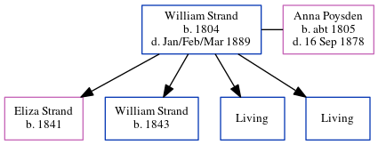

William Strand 1804 - 1889
[ Home ] | [ Calendar ] | [ Surnames Index ] | [ Errors ] | [ Family History ]William Strand, the husband of Anna Maria Poysden (the four times great-aunt of Nigel Horne), was born in Chislet, Kent, England in 18041,2,3,4,5,6 and married Anna (with whom he had 4 children: Eliza, William, Joseph Thomas and Edwin, along with 2 surviving children) in Sturry, Kent, England on 1 Jun 18338.
During his life, he was living at his birthplace in 18411 and in 18512; in Upstreet, Kent, England on 30 Mar 18519; in St Nicholas-at-Wade, Kent, England in 18613; in Herne, Kent, England in 18714; and at his birthplace in 18815.
He died in Jan/Feb/Mar 1889 in Dover, Kent, England6,7.
Children
- Eliza was born in 1841
- William was born in 1843
Citations
- 1841 England Census Online publication - Provo, UT, USA: The Generations Network, Inc., 2006.Original data - Census Returns of England and Wales, 1841. Kew, Surrey, England: The National Archives of the UK (TNA): Public Record Office (PRO), 1841. Data imaged from the National
- 1851 England Census Online publication - Provo, UT, USA: The Generations Network, Inc., 2005.Original data - Census Returns of England and Wales, 1851. Kew, Surrey, England: The National Archives of the UK (TNA): Public Record Office (PRO), 1851. Data imaged from the National
- 1861 England Census Online publication - Provo, UT, USA: The Generations Network, Inc., 2005.Original data - Census Returns of England and Wales, 1861. Kew, Surrey, England: The National Archives of the UK (TNA): Public Record Office (PRO), 1861. Data imaged from the National
- 1871 England Census Online publication - Provo, UT, USA: The Generations Network, Inc., 2004.Original data - Census Returns of England and Wales, 1871. Kew, Surrey, England: The National Archives of the UK (TNA): Public Record Office (PRO), 1871. Data imaged from the National
- 1881 England Census Online publication - Provo, UT, USA: The Generations Network, Inc., 2004. 1881 British Isles Census Index provided by The Church of Jesus Christ of Latter-day Saints © Copyright 1999 Intellectual Reserve, Inc. All rights reserved. All use is subject to the
- England & Wales, FreeBMD Death Index: 1837-1915 Online publication - Provo, UT, USA: The Generations Network, Inc., 2006.Original data - General Register Office. England and Wales Civil Registration Indexes. London, England: General Register Office. © Crown copyright. Published by permission of the Cont
- Public Member Trees Online publication - Provo, UT, USA: The Generations Network, Inc., 2006.Original data - Family trees submitted by Ancestry members.Original data: Family trees submitted by Ancestry members.
- England Marriages 1538-1973 - Findmypast
- 1851 England, Wales & Scotland Census - Findmypast (was age 46 and the head of the household)
Family Tree
Map
Generated by ged2site. Last updated on Jul 3, 2024
Known Issues
Listed in the residence for 1861, but spouse Anna Poysden is not
Listed in the residence for 1871, but spouse Anna Poysden is not